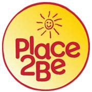

Skate way to raise funds and awareness - double-header with a difference
Super skaters from across the UK will join forces in central Scotland for a sporting contest packed full of thrills, spills and skills – all in aid of a fantastic cause.
Bairn City Rollers (BCR) – the Central Scotland male and female roller derby league – has organised a unique double-header to help raise funds for a cherished charity providing school-based mental health support.
There will be two games at Grangemouth Sports Complex on Saturday, May 9 and a variety of family-friendly fun – all raising funds for Place2Be – which provides emotional and therapeutic services in primary and secondary schools.The main game of the day will see BCR’s co-ed team – the Belter Skelpers – take on Team Crazy Legs, a unique team made of roller derby players from across the UK who skate to raise awareness of mental health and chronic illness.
The first game will feature ladies rookie teams Love and Shoves as they display the fantastic skills being honed by the next generation of derby players.Doors open at 2.30pm and tickets are available by visiting www.facebook.com/BairnCityRollers
Gill Crawford, a skater and trainer with BCR, is one of the main organisers.
Gill – who skates under the name Bobbie Bang Bang and lives in Falkirk – said: “It’s going to be a fantastic day for a wonderful cause – please do your bit by coming along and joining the fun.
fantastic day for a wonderful cause – please do your bit by coming along and joining the fun.
“Roller derby is known as one of the most inclusive sports in the world and this event is testament to that – people pulling together to support each other and a great cause.
“It’s going to be a unique double-header. First will be a game featuring some of Scotland’s best up-and-coming skaters – showcasing the skills and thrills that roller derby is famed for.
“The main bout of the day will see my own league’s co-ed team – the Belter Skelpers – up against the tremendous Team Crazy Legs. It’s going to be a thrilling clash and lots of fun.”
Gill is one of the stalwarts of the BCR league – which also boasts a male team, the Skelpies, and female team, the Central Belters – but will be captaining Team Crazy Legs on the day.
 “I can’t wait,” she said. “This is a cause which is close to my heart – as it is for a lot of skaters. More than any other sport, roller derby is a community.
“I can’t wait,” she said. “This is a cause which is close to my heart – as it is for a lot of skaters. More than any other sport, roller derby is a community.
“It’s going to be a fantastic day for all the family – full of thrills and spills, a variety of stalls and entertainment for all ages.”
Tickets cost just £6 in advance, £8 on the door – which under-14s getting in free with a paying adult.
All profits will go to Place2Be – which provides emotional and therapeutic services in primary and secondary schools, building children's resilience through talking, creative work and play.
It currently reaches 94,000 children, helping them to cope with wide-ranging and often complex social issues including bullying, bereavement, domestic violence, family breakdown, neglect and trauma.
For more information check out the website - www.place2be.org.uk
The BCR Charity Bout also aims to raise awareness of Mental Health Awareness Week (May 11-17). There will be information available on the Mental Health Foundation, Scottish Association for Mental Health and Falkirk & District Association for Mental Health.
The event takes place on Saturday, May 9, from 2.30pm-7.30pm at Grangemouth Sports Complex, Abbots Road, Grangemouth FK3 8JB. Tickets available now.
- Bairn City Rollers are currently recruiting new skaters. It’s your chance to get involved in one of the world’s fastest-growing and most thrilling sports. If you’re over 18 and want to find your feet in roller derby, visit facebook.com/BairnCityRollers for details.

{kind=link}